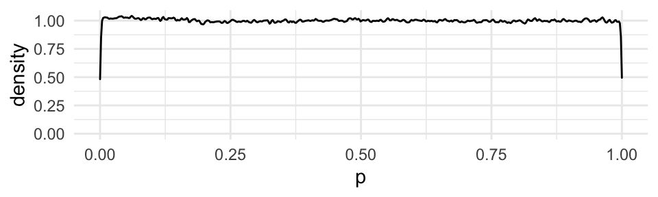
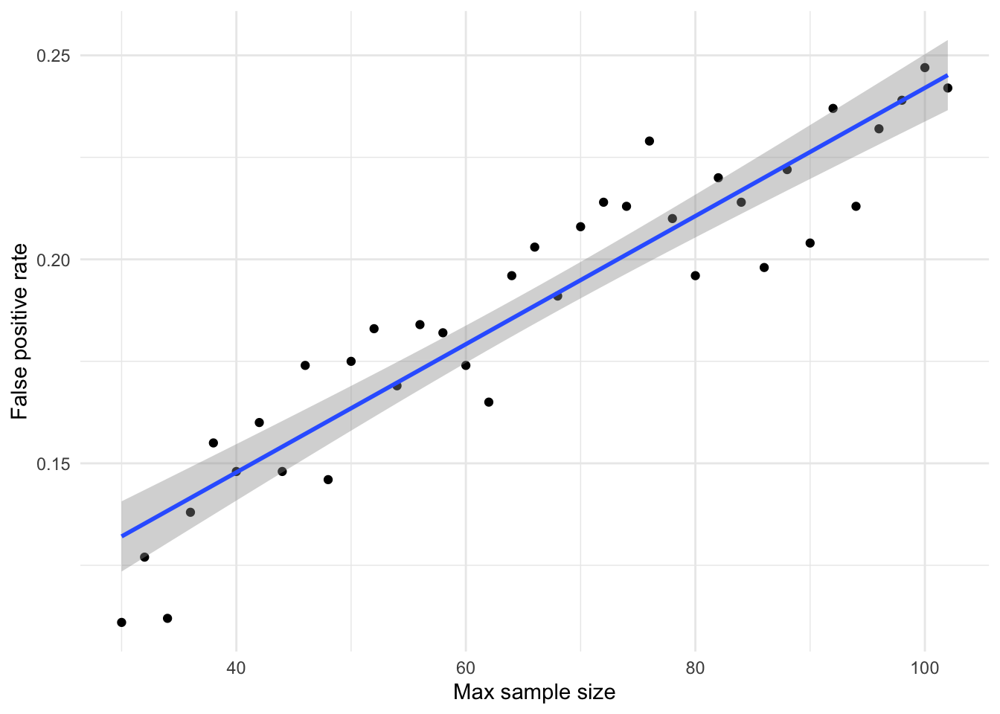
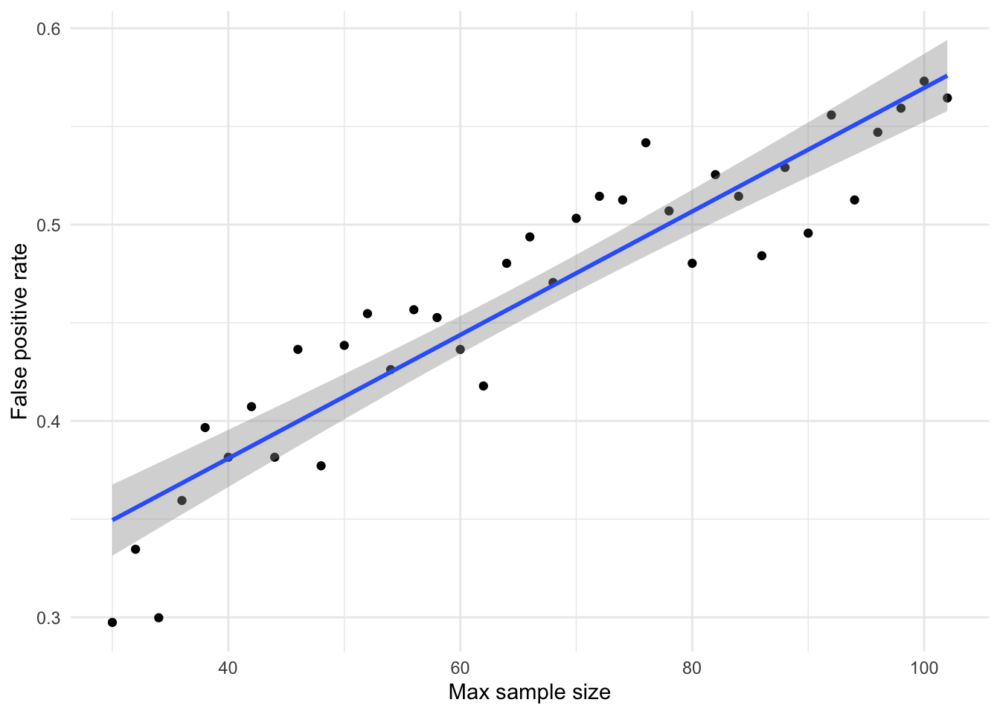

An undergraduate training in statistics tells us that sequential testing with optional stopping inflates the false positive rate, but exactly how much it inflates it is less intuitive. Sometimes, the metaphor of rolling a 20-sided dice every time a statistical test is run (assuming alpha = 0.05). However, whereas each roll of the dice is independent, running a new instance of a test on a slightly data set after adding a number of participants is not fully independent. As such, 20-retests after adding each of 20 new participants is unlikely to inflate the false-positive rate all the way to 1.0. Sequential testing with optional stopping is bad, no doubt, but just how bad? I had to run a simulation study to figure it out.
# dependencies
library(effsize)
library(tidyverse)
library(simstudy)
library(beepr)
library(sjPlot)
library(svMisc)
set.seed(42)Imagine that a researcher wants to run a simple between groups study where they compare an intervention group to a control group an examine differences on a single variable. The researcher might select a sample size on the basis that 102 participants would have 80% power to detect an effect size of Cohen’s d = 0.5 (alpha = 0.05, one-tailed).
However, imagine that the researcher is unaware of the problems associated with sequential testing with optional stopping. Instead of collecting the 102 participants and running a single independent t-test, imagine they collect 20 participants and then runs a t-test. If it is significant, they stop data collection and report their result. If it is not, they collect two more participants (1 per group) and then re-run the t-test. If they reach 102 participants they stop either way.
Most readers understand that the test will suffer from increase in the false positive rate above that intended by the alpha value due to multiple testing. However, the magnitude of this increase is uncertain. This simulation study quantifies the impact of sequential testing with optional stopping on the false positive rate.
In order to examine the influence of maximum sample size on the false positive rate (i.e., if the researcher chose a smaller maximum sample size), I simulate studies that include between 30 and 102 participants (in steps of n = 2). For each step, 1000 studies are simulated. In order to estimate false discovery rate, we simulate date selected from a true effect size of Cohen’s d = 0 (no effect). To simulate optional stopping, if any one p value in the tests run up to the maximum sample size if found to be below the alpha value (i.e., p < .05), then study is marked as significant. The proportion of significant results are then calculated across 1000 simulated studies for each maximum sample size (from 30 to 102) in order to estimate false discovery rates. The rate of false positives in excess of the chosen alpha value (0.05) can then be observed.
## functions for simulation
# each is used within the subsequent function
# function: sequentially tested p values
p_sequential <- function(data){
output_data <- NULL
for(i in 21:nrow(data)) { # skip the first 10 participants
p_seq <- data %>%
filter(between(participant_n, 1, i)) %>%
do(p = t.test(SCIAT_D1~IAT_condition,
data = .,
var.equal=TRUE,
paired=FALSE)$p.value)
output_data[i] <- p_seq$p %>% as.numeric()
}
output_data <- output_data %>% as.data.frame()
colnames(output_data) <- "p"
return(output_data)
}
# function: generate two conditions of normal data that differ by a given cohen's d effect size
sequential_analysis <- function(cohens_d, participants){
parameters_a <- defData(varname = "Score", dist = "normal", formula = cohens_d, variance = 1, id = "idnum")
parameters_b <- defData(varname = "Score", dist = "normal", formula = 0, variance = 1, id = "idnum")
# generate required number of data points using above parameters
# for random participant numbers/order
data_participant_ids <- genData(participants, parameters_a) %>%
rename(ordering = Score)
# for condition A (mu = 0)
data_a <- genData(participants/2, parameters_a) %>%
mutate(Condition = "A")
# for condition B (mu = cohens_d)
data_b <- genData(participants/2, parameters_b) %>%
mutate(Condition = "B",
idnum = idnum + participants/2)
data <- rbind(data_a, data_b) %>%
mutate(SCIAT_D1 = round(Score, 2)) %>%
arrange(idnum, Condition) %>%
left_join(data_participant_ids, by = "idnum") %>%
arrange(ordering) %>%
rownames_to_column(var = "participant_n") %>%
select(-idnum, -ordering, -Score) %>%
rename(IAT_condition = Condition) %>%
mutate(participant_n = as.numeric(participant_n))
p_sequential_data <- p_sequential(data) %>%
rownames_to_column(var = "participant_n") %>%
mutate(participant_n = as.numeric(participant_n))
return(p_sequential_data)
}
# function: generate p values for a given number of simulated studies of a known effect size
sequential_testing_simulation <- function(sims, cohens_d, participants){
temp_list = list()
output_data <- NULL
for(i in 1:sims) {
simulation <- sequential_analysis(cohens_d = cohens_d, participants = participants) %>%
mutate(simulation = i) %>%
na.omit
fp_stat <- simulation %>%
mutate(sig_result = ifelse(p < .05, 1, 0)) %>%
group_by(simulation) %>%
summarize(fp = max(sig_result, na.rm = TRUE))
simulation <- left_join(simulation, fp_stat, by = "simulation")
temp_list[[i]] <- simulation
}
output_data <- do.call(rbind, temp_list) %>%
na.omit() %>%
mutate(p = round(p, 3))
rownames(output_data) <- c()
return(output_data)
}
# function: simulate these p values for these studies across a range of sample sizes.
sequential_testing_simulation_across_N_participants <- function(sims, cohens_d, participants_min = 30, participants) { # has to be an even number of min and max particiapnts
simulations <- NULL
n_participants <- NULL
output_data <- NULL
temp_list = list()
for(i in seq(from = participants_min, to = participants, by = 2)) { # has to be an even number of min and max participants
require(svMisc)
progress_value <- ((i - participants_min)*100 / (participants - participants_min))
progress(progress_value)
simulations <- sequential_testing_simulation(sims = sims, cohens_d = cohens_d, participants = i) %>%
mutate(max_participants = i)
temp_list[[i]] <- simulations
}
output_data <- do.call(rbind, temp_list) %>%
na.omit()
rownames(output_data) <- c()
return(output_data)
}
## run stimulations
# NB Runtime of c.1 hour when max_participants = 102 given that c.2 million datasets and p values generated
# Commented out as I've run it and saved it in the past to save time when simply rendering html.
# sim_data_detailed <-
# sequential_testing_simulation_across_N_participants(sims = 1000,
# cohens_d = 0,
# participants = 102) # 210 would be b=.95, a=.025, d=.5
#
# # beep when completed
# beep()
#
# # save
# save(sim_data_detailed, file = "sim_data_detailed.RData")
load(file = "sim_data_detailed.RData")Distribution of p values should be roughly flat under null hypothesis (d = 0). That is, any individual p value should not be biased.
# distibution of p values should be flat under null hypothesis when d = 0
ggplot(sim_data_detailed) +
geom_density(aes(x = p), adjust = 0.1) +
theme_minimal()
sim_data_detailed_summary <- sim_data_detailed %>%
group_by(max_participants) %>%
summarize(fpr = mean(fp)) %>%
mutate(fpr_3way = 1 - (1 - fpr)^3)## `summarise()` ungrouping output (override with `.groups` argument)ggplot(sim_data_detailed_summary, aes(max_participants, fpr)) +
geom_point() +
geom_smooth(method = "lm") +
theme_minimal() +
ylab("False positive rate") +
xlab("Max sample size")## `geom_smooth()` using formula 'y ~ x'
sim_data_detailed_summary %>%
lm(fpr ~ max_participants,
data = .) %>%
tab_model(digits = 3,
emph.p = FALSE)| fpr | |||
|---|---|---|---|
| Predictors | Estimates | CI | p |
| (Intercept) | 0.085 | 0.071 – 0.099 | <0.001 |
| max_participants | 0.002 | 0.001 – 0.002 | <0.001 |
| Observations | 37 | ||
| R2 / R2 adjusted | 0.873 / 0.869 | ||
As can be seen from the plot and the regression to estimate the linear relationship, in simulations where the max N = 30 participants, the real false positive rate is actually 0.13 rather than the 0.05 implied by the alpha value. Due to the increased number of multiple testing instances as sample size increases, the false positive rate at N = 102 is estimated to be 0.25. That is, when there is no true effect (Cohen’s d = 0), 25% of optionally-stopped studies will return significant results.
At this point, it is worth remembering that the power of a test when true Cohen’s d = 0.5, conducted when N = 30, is only 0.37. That is, the probability of detecting a true effect of medium effect size at N = 30 is 0.37. Or, put another way, the true effect size would have to be d = 0.93 to maintain 80% power at this sample size. In contrast, the probability of a false positive (where true d = 0) at the same sample size is 0.13.
Of course, it is impossible to know the true ratio between tested hypotheses that are true relative to false. However, even if this was (an extremely generous) 50%, this suggests that at N = 30 the likelihood ratio that a significant result referring to either a true effect of d = 0.5 versus a false positive (true effect d = 0) is only 2.8. That is, more than one in three significant results represent false conclusions relative to true conclusions that an effect is present (while making the large assumption that there is a 1:1 ratio between true and false hypotheses).
When the same logic is applied to the results of the simulation when max N = 102, the likelihood ratio that a significant result referring to either a true effect of d = 0.5 versus a false positive (true effect d = 0) is 3.2, suggesting a roughly equivalent ratio between true and false conclusions. If the ratio between true and false hypotheses was lower, say 1 true tested hypothesis for every 10 false hypothesis, the likelihood ratio for a significant result to refer to a true conclusion relative to a false conclusion is only 0.32 (when max N = 30) to 0.28 (when max N = 102). That is, only for every 1 true conclusion that an effect is present there would be three other studies that conclude that an effect was present when this was not the case.
Although larger sample sizes are critical to conducting adequately powered studies, the results of this simulation study therefore emphasis that increased sample size also inflates the negative impact of forms of p hacking such as optional stopping.
Unfortunately, the picture this simulation study paints can actually get even worse, as will be discussed below.
Imagine that the researcher was instead running an N X N factorial design, where the presence of either main effect or the interaction effect would be of interest. Due to this (potentially overlooked) multiple testing, in the absence of other sources of inflation, the false positive rate of such a 2 X 2 ANOVA is equal to 1-(1-alpha^3), e.g., 1-(1-0.05^3) = 0.14 (Cramer et al., 2016).
The following analysis approximates the influence of combining both multiple testing due to factorial multiplicity and multiple testing due to sequential testing with optional stopping. This is done by multiplying the false positive rates found in the previous simulation by the inflation introduced by an N X N factorial design, i.e., new_false_positive_rate = 1-(1-false_positive_rate^3).
ggplot(sim_data_detailed_summary, aes(max_participants, fpr_3way)) +
geom_point() +
geom_smooth(method = "lm") +
theme_minimal() +
ylab("False positive rate") +
xlab("Max sample size")## `geom_smooth()` using formula 'y ~ x'
sim_data_detailed_summary %>%
lm(fpr_3way ~ max_participants,
data = .) %>%
tab_model(digits = 3,
emph.p = FALSE)| fpr 3 way | |||
|---|---|---|---|
| Predictors | Estimates | CI | p |
| (Intercept) | 0.255 | 0.225 – 0.285 | <0.001 |
| max_participants | 0.003 | 0.003 – 0.004 | <0.001 |
| Observations | 37 | ||
| R2 / R2 adjusted | 0.861 / 0.857 | ||
# 0.0031*102 + 0.0850
#
# .80/(0.40)
# .37/(0.18)
#
# .80/(0.40*10)
# .37/(0.18*10)When also considering the multiplicity involved in an N X N factorial design, false positive rate at max N = 30 increases from 0.13 to 0.18, and when max N = 102 from 0.25 to 0.40.
Assuming that there is a 1:1 between tested true and false hypotheses, the likelihood ratio between a significant result referring to a true positive (genuine effect of d = 0.5) versus a false positive (d = 0) is 2.0 (when max N = 30) to 2.1. That is, roughly 2 true conclusions that an effect is present for every false conclusion that one is present. This worsens significantly if the assumed ratio between tested true and false hypotheses is lowered to 1:10, where the likelihood ratio of true positives to false positives is 0.2 (across both max N = 30 to 102). That is, 5 false conclusions that an effect is present for every 1 correct conclusion that it is present.
Lastly, I should note that these rates of false positives can be further inflated by other forms of p hacking, such selective choice of exclusion strategies, data transformations, scoring methods, sub-sampling conditions, covariates, etc.